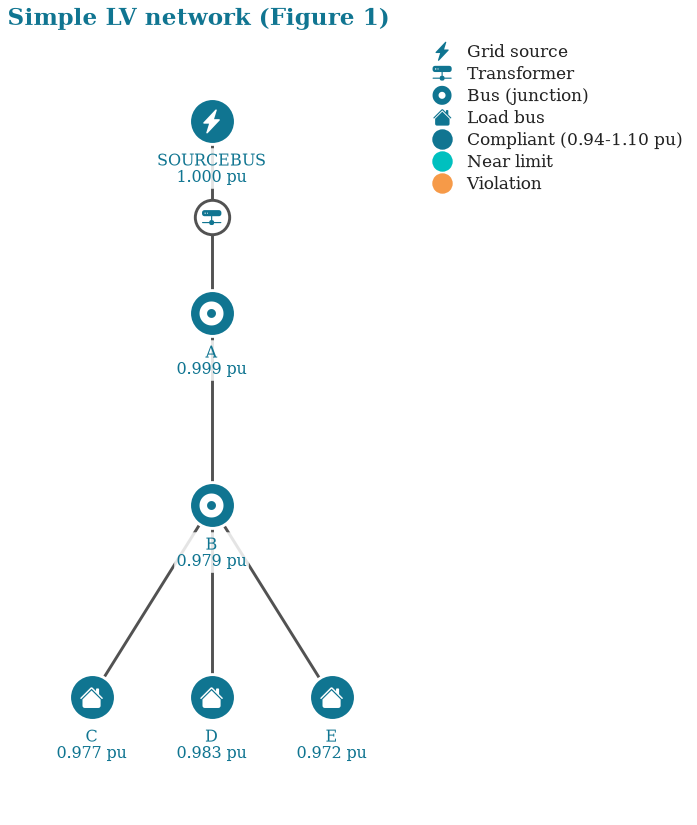
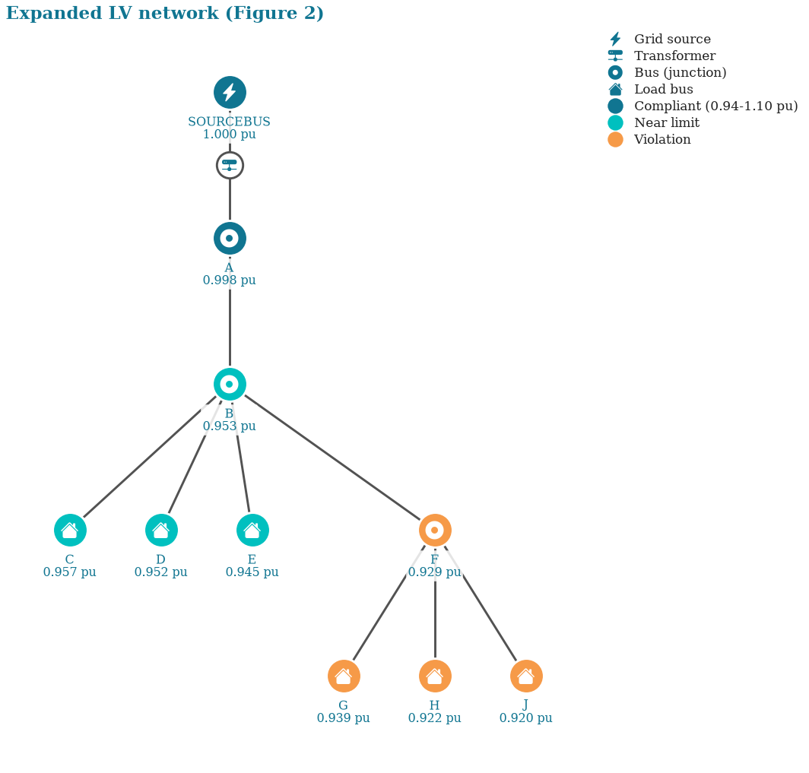
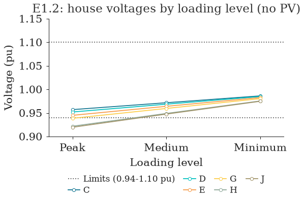
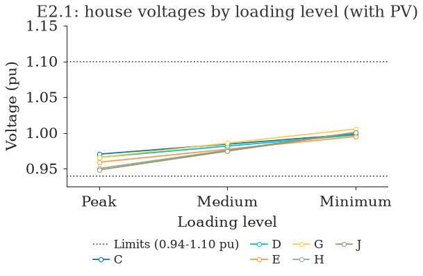
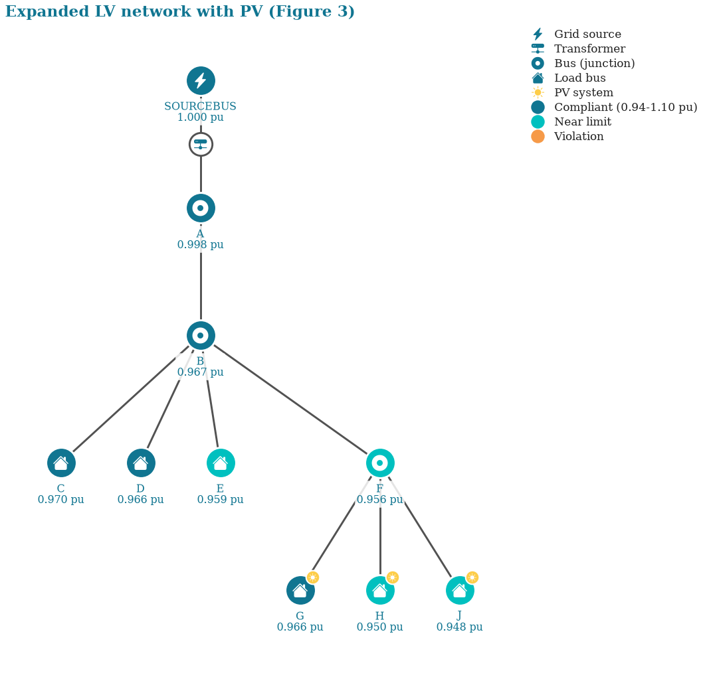
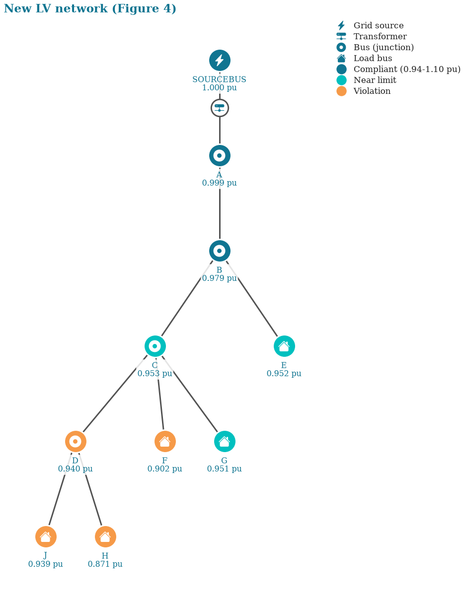
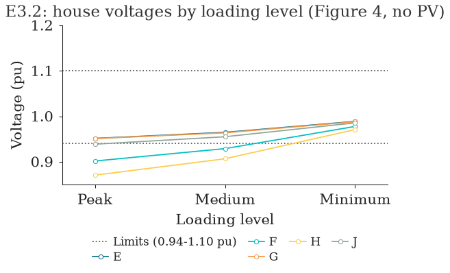
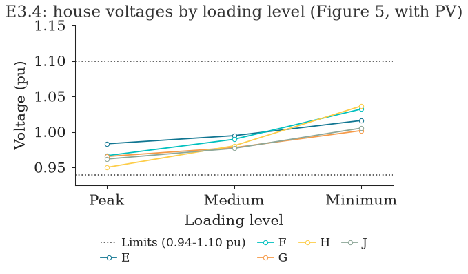
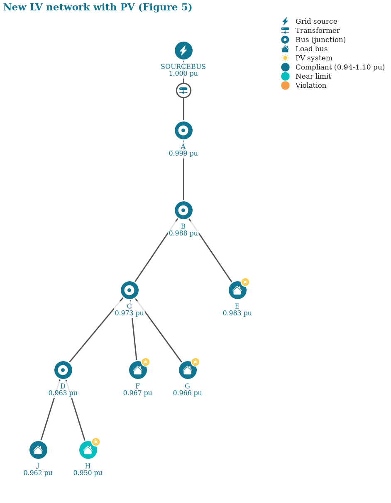

OpenDSS LV Modeling with popo#
Objectives#
This notebook is a guide to modeling a low-voltage (LV) distribution network and running a power flow, the foundational skill most of popo's other tooling builds on. By the end you will be able to:
- Model an LV network in OpenDSS: a transformer, lines, and single-phase house loads.
- Read the circuit's elements (lines, loads, transformers) back as records with
popo.network.Circuit. - Extract power, current, voltage and loss results as tables with
popo.powerflow.results. - Check bus voltages against a statutory limit, and list the readings that break it, with
popo.standards.VoltageLimits. - Read a transformer definition file with
popo.network.read_transformers. - Visualize the network's topology and work through three expansion exercises.
Building a circuit is ordinary opendssdirect usage: native OpenDSS commands sent through dss.Text.Command(...). popo does its work on the way back out. Circuit turns the compiled circuit into Python records, popo.powerflow.results turns a solved one into tables, and VoltageLimits judges those tables against a named standard. OpenDSS stays one call away throughout, for anything popo does not cover.
1. Building the circuit#
The network is small on purpose: a transformer (11 kV/0.4 kV), a three-phase line connecting bus A with bus B, and three single-phase lines connecting bus B with buses C, D and E, the connection points of three houses.
- The 11 kV and 0.4 kV are line-to-line nominal voltages; OpenDSS wants line-to-line kV for a three-phase bus and line-to-neutral kV for a single-phase load.
dssbelow is theopendssdirectmodule itself. OpenDSS runs one engine per process, so everydss.Text.Command(...)call changes the one compiled circuit for the rest of the session. The circuit is built through it directly; Section 2 reads it back withpopo.
import opendssdirect as dss
print("Backed by OpenDSSDirect.py, no external OpenDSS install needed on any OS")
print(dss.__class__.__module__)
Backed by OpenDSSDirect.py, no external OpenDSS install needed on any OS
builtins
1.1 Creating a circuit#
Clearclears any existing model.Set DefaultBaseFrequency=50sets the circuit's frequency to 50 Hz.New Circuit.Simple_LV_Networkcreates a new circuit namedSimple_LV_Network.Edit vsource.source ...edits the source bus (OpenDSS's name for the slack bus) and sets its parameters.
dss.Text.Command("Clear")
dss.Text.Command("Set DefaultBaseFrequency=50")
dss.Text.Command("New Circuit.Simple_LV_Network")
dss.Text.Command("Edit vsource.source bus1=sourceBus basekv=11 pu=1.0 phases=3")
1.2 Adding the 11kV/0.4kV transformer#
New Transformer.LVTRcreates a new transformer named LVTR.Buses=[sourceBus, A.1.2.3]sets the two buses it connects:sourceBusand busA.Conns=[delta wye]sets a delta-wye connection.KVs=[11, 0.4]sets the transformer ratio, 11 kV to 0.4 kV.KVAs=[250 250]sets the rated apparent power of each winding.
dss.Text.Command(
"New transformer.LVTR Buses=[sourcebus, A.1.2.3] Conns=[delta wye] "
"KVs=[11, 0.4] KVAs=[250 250] %Rs=0.00 xhl=2.5 %loadloss=0"
)
1.3 Creating linecodes#
When multiple lines share the same conductor characteristics, a linecode is defined once and reused. linecode.240sq describes a three-phase segment with 240 mm² conductors; linecode.16sq describes a single-phase segment with 16 mm² conductors.
dss.Text.Command("new linecode.240sq nphases=3 R1=0.127 X1=0.072 R0=0.342 X0=0.089 units=km")
dss.Text.Command("new linecode.16sq nphases=1 R1=1.15 X1=0.083 R0=1.2 X0=0.083 units=km")
1.4 Creating the 400V and 230V lines#
One three-phase line connects bus A and bus B; three single-phase lines connect B to C, D, and E respectively.
dss.Text.Command("new line.A_B bus1=A.1.2.3 bus2=B.1.2.3 length=1 phases=3 units=km linecode=240sq")
dss.Text.Command("new line.B_L1 bus1=B.1 bus2=C.1 length=0.01 phases=1 units=km linecode=16sq")
dss.Text.Command("new line.B_L2 bus1=B.2 bus2=D.1 length=0.01 phases=1 units=km linecode=16sq")
dss.Text.Command("new line.B_L3 bus1=B.3 bus2=E.1 length=0.01 phases=1 units=km linecode=16sq")
1.5 Connecting loads to a bus#
Each single-phase load represents one house:
Load Name |
Phases |
Connected bus |
Peak Demand (kW) |
PF |
|---|---|---|---|---|
Load_1 |
1 |
C |
7 |
0.95 |
Load_2 |
1 |
D |
6 |
0.95 |
Load_3 |
1 |
E |
8 |
0.95 |
dss.Text.Command(
"new load.Load_1 bus1=C.1 phases=1 kV=(0.4 3 sqrt /) kW=7 pf=0.95 "
"model=1 conn=wye Vminpu=0.85 Vmaxpu=1.20 status=fixed"
)
dss.Text.Command(
"new load.Load_2 bus1=D.1 phases=1 kV=(0.4 3 sqrt /) kW=6 pf=0.95 "
"model=1 conn=wye Vminpu=0.85 Vmaxpu=1.20 status=fixed"
)
dss.Text.Command(
"new load.Load_3 bus1=E.1 phases=1 kV=(0.4 3 sqrt /) kW=8 pf=0.95 "
"model=1 conn=wye Vminpu=0.85 Vmaxpu=1.20 status=fixed"
)
1.6 Control mode and voltage bases#
We are not controlling network elements (e.g. on-load tap changers) or running a time series, so controlmode and mode are set to static and snapshot: a single power flow run. Set VoltageBases and calcvoltagebases are what let OpenDSS report voltages in per unit.
dss.Text.Command("set controlmode=static")
dss.Text.Command("set mode=snapshot")
dss.Text.Command("Set VoltageBases=[11 0.4]")
dss.Text.Command("calcvoltagebases")
1.7 Solving the power flow#
If the solve fails, OpenDSS raises an exception naming exactly which command caused it, usually a modeling error above, not something popo or opendssdirect got wrong.
dss.Solution.Solve()
if dss.Solution.Converged():
print("The circuit was solved successfully")
The circuit was solved successfully
2. Reading circuit properties#
opendssdirect mirrors OpenDSS's COM interface: reading every line means calling dss.Lines.First() and dss.Lines.Next() by hand and reading each property off a shared active-element pointer. popo.network.Circuit does that walk for you and yields small frozen records instead, so pd.DataFrame(circuit.lines) is the whole table.
Circuit(dss) is a view of whatever is compiled in the engine right now, not a copy. OpenDSS runs one circuit per process, so every later dss.Text.Command(...) in this notebook changes what circuit sees. (Circuit.load(path) does the Clear and Redirect of a feeder kept in files, which the next notebook uses.)
import pandas as pd
from popo.network import Circuit
from popo.plotting.tables import themed_gt
circuit = Circuit(dss)
lines_df = pd.DataFrame(circuit.lines)
themed_gt(lines_df, decimals=3)
| name | bus1 | bus2 | phases | length |
|---|---|---|---|---|
| a_b | a.1.2.3 | b.1.2.3 | 3 | 1.000 |
| b_l1 | b.1 | c.1 | 1 | 0.010 |
| b_l2 | b.2 | d.1 | 1 | 0.010 |
| b_l3 | b.3 | e.1 | 1 | 0.010 |
line = next(circuit.lines)
print(f"Line {line.name} connected between buses ({line.bus1}, {line.bus2}) has a length of {line.length} km")
Line a_b connected between buses (a.1.2.3, b.1.2.3) has a length of 1.0 km
Loads, PV systems and batteries come back the same way. A transformer comes back as the same popo.network.Transformer record read_transformers produces from a definition file (Section 5), so a live circuit can be handed to popo.powerflow.solve_time_series without first finding that file.
print(next(circuit.transformers))
themed_gt(pd.DataFrame(circuit.loads), decimals=3)
Transformer(name='lvtr', rating_kva=250.0, low_voltage_bus='a', secondary_kv=0.4, normal_rating_kva=275.0)
| name | bus1 | kw | kvar | pf | phases |
|---|---|---|---|---|---|
| load_1 | c.1 | 7.000 | 2.301 | 0.950 | 1 |
| load_2 | d.1 | 6.000 | 1.972 | 0.950 | 1 |
| load_3 | e.1 | 8.000 | 2.629 | 0.950 | 1 |
For anything without a record field, circuit.command runs any OpenDSS command and returns its text result, such as a ? property query. circuit.dss is the opendssdirect module itself.
print(circuit.command("? line.a_b.length"))
1
Loop through elements#
The records iterate like any Python sequence:
line_lengths = {line.name: line.length for line in circuit.lines}
print(line_lengths)
{'a_b': 1.0, 'b_l1': 0.01, 'b_l2': 0.01, 'b_l3': 0.01}
3. Extracting results#
Once the circuit is solved, popo.powerflow.results reads its results back as long tables, one row per (element, phase), so a result can be filtered and joined rather than indexed into by position. Each function takes the dss module; Circuit has the same tables as methods (circuit.bus_voltages() and so on).
Load active (P) and reactive (Q) power#
from popo.powerflow import bus_voltages, circuit_summary, element_powers, line_currents, line_losses
themed_gt(element_powers(dss, "loads"), decimals=3)
| name | phase | p_kw | q_kvar |
|---|---|---|---|
| load_1 | 1 | 7.000 | 2.300 |
| load_2 | 1 | 6.000 | 1.972 |
| load_3 | 1 | 7.999 | 2.629 |
Active (P) and reactive (Q) power of a three-phase element#
element_powers works the same way for any element type, here the transformer: one row per phase rather than a flat list of P/Q pairs to index into by hand.
themed_gt(element_powers(dss, "transformers"), decimals=3)
| name | phase | p_kw | q_kvar |
|---|---|---|---|
| lvtr | 1 | 6.509 | 2.527 |
| lvtr | 2 | 7.359 | 1.776 |
| lvtr | 3 | 7.584 | 2.888 |
Line currents#
Per-phase current magnitude at each line's sending end, one row per (line, phase).
themed_gt(line_currents(dss), decimals=3)
| line | bus1 | bus2 | phase | current_a |
|---|---|---|---|---|
| a_b | a.1.2.3 | b.1.2.3 | 1 | 32.660 |
| a_b | a.1.2.3 | b.1.2.3 | 2 | 27.814 |
| a_b | a.1.2.3 | b.1.2.3 | 3 | 37.498 |
| b_l1 | b.1 | c.1 | 1 | 32.660 |
| b_l2 | b.2 | d.1 | 1 | 27.814 |
| b_l3 | b.3 | e.1 | 1 | 37.498 |
Bus voltages#
One row per (bus, phase), in per unit of the bus's own base voltage. Each row is labelled with the phase the bus is actually connected on. That matters on a real feeder: a single-phase house on phase 2 is reported by OpenDSS as one value, and numbering values 1, 2, 3 in order would label it phase 1, silently.
voltages = bus_voltages(dss)
themed_gt(voltages.head(), decimals=4)
| bus | phase | vmag_pu | vangle_deg | kv_base |
|---|---|---|---|---|
| sourcebus | 1 | 1.0000 | −0.0005 | 6.3509 |
| sourcebus | 2 | 1.0000 | −120.0006 | 6.3509 |
| sourcebus | 3 | 1.0000 | 119.9994 | 6.3509 |
| a | 1 | 0.9993 | −30.1234 | 0.2309 |
| a | 2 | 0.9994 | −150.1053 | 0.2309 |
load = next(circuit.loads)
house_bus = load.bus1.split(".")[0]
house_voltage = voltages.query("bus == @house_bus")["vmag_pu"].iloc[0]
print(f"The voltage at the bus connected to {load.name} is {house_voltage:.3f} pu")
The voltage at the bus connected to load_1 is 0.977 pu
The same DataFrame answers the three-phase case for free: filter to one bus and every phase's magnitude and angle is right there as rows, instead of indexing into a flat array at 0, 2, 4.
themed_gt(voltages.query("bus == 'a'"), decimals=4)
| index | bus | phase | vmag_pu | vangle_deg | kv_base |
|---|---|---|---|---|---|
| 3 | a | 1 | 0.9993 | −30.1234 | 0.2309 |
| 4 | a | 2 | 0.9994 | −150.1053 | 0.2309 |
| 5 | a | 3 | 0.9992 | 89.8581 | 0.2309 |
Checking bus voltages against a statutory limit#
This is where popo.standards.VoltageLimits replaces doing the comparison by hand. Rather than eyeballing each vmag_pu against a hard-coded band, the per-unit voltages are judged against a named standard and the verdict carries why it passed or failed, not just a bare true/false. EN 50160 is the right choice here: a European LV network, not a North American one, so ANSI C84.1's narrower band would be a category error, not a more conservative check.
The verdict says whether the network complies; violations says where it does not, listing each reading outside the band with the side it falls on and how far past the bound it sits. The source bus is excluded first: it is held at its setpoint by construction, so it says nothing about what a customer sees.
from popo.standards import VoltageLimits
en50160 = VoltageLimits.en_50160()
customer_side = voltages.query("bus != @circuit.source_bus")
report = en50160.check(customer_side["vmag_pu"])
print(report.summary())
print(f"Readings outside the EN 50160 band: {len(en50160.violations(customer_side))}")
EN 50160: compliant; 100.00 % within band, range 0.9723 to 0.9994 pu
Readings outside the EN 50160 band: 0
Line losses#
Worth capturing this network's peak-loading loss in a plain variable here, not just printing it: OpenDSSDirect.py is a singleton engine, so every later dss.Text.Command(...) call below mutates the same compiled circuit, and Exercise 1 below compares its own peak-loading losses back against this baseline. line_losses breaks the total down by line; circuit_summary is the one-line health check.
from IPython.display import display
from popo.plotting.tables import record_table
display(themed_gt(line_losses(dss), decimals=4))
summary = circuit_summary(dss)
base_peak_loss_kw = summary["total_p_loss_kw"]
base_peak_loss_kvar = summary["total_q_loss_kvar"]
record_table(summary, title="Peak-loading summary", decimals=3)
| line | bus1 | bus2 | p_loss_kw | q_loss_kvar |
|---|---|---|---|---|
| a_b | a.1.2.3 | b.1.2.3 | 0.4172 | 0.2340 |
| b_l1 | b.1 | c.1 | 0.0123 | 0.0009 |
| b_l2 | b.2 | d.1 | 0.0089 | 0.0006 |
| b_l3 | b.3 | e.1 | 0.0162 | 0.0012 |
| Peak-loading summary | |
| statistic | value |
|---|---|
| converged | True |
| n buses | 6 |
| n lines | 4 |
| n loads | 3 |
| n transformers | 1 |
| total p loss kw | 0.455 |
| total q loss kvar | 0.289 |
4. Visualizing the network#
A bus-voltage table answers "what is the voltage," a network diagram answers "where." Both matter for the same reason: a violation only makes sense once you can see how far it is from the source. popo.plotting.network draws that view: topology_from_dss reads the solved circuit's lines, transformers, loads, PV systems and bus voltages into plain Python data, and plot_topology draws it as a schematic, with a Bootstrap Icons glyph for each bus's role (grid source, transformer, junction, house, PV) and each bus coloured by its voltage status against the 0.94-1.10 pu band. There is no bus coordinate data here, so the layout is a tree grown from the source bus, not a geographic one. That is fine for reading topology, not for reading distance.
import matplotlib.pyplot as plt
from style import configure
from popo.plotting.network import plot_topology, topology_from_dss
configure()
plot_topology(topology_from_dss(dss), title="Simple LV network (Figure 1)")
plt.show()

Export commands#
For anything else, OpenDSS's own export command is still available through dss.Text.Command, the same escape hatch as above.
from pathlib import Path
import tempfile
def export_to_df(measurement: str) -> pd.DataFrame:
# `export <type> <name>` writes next to the working directory and the second
# word is often an element name rather than a path override (e.g. a monitor's
# name for "monitors <name>"), so the written file's actual location is read
# back from `dss.Text.Result()` instead of assumed.
dss.Text.Command(f"export {measurement}")
saved_file = dss.Text.Result()
try:
return pd.read_csv(saved_file, index_col=0)
finally:
Path(saved_file).unlink(missing_ok=True)
themed_gt(export_to_df("voltages"), decimals=4)
| Bus | BasekV | Node1 | Magnitude1 | Angle1 | pu1 | Node2 | Magnitude2 | Angle2 | pu2 | Node3 | Magnitude3 | Angle3 | pu3 |
|---|---|---|---|---|---|---|---|---|---|---|---|---|---|
| SOURCEBUS | 11.0000 | 1 | 6,350.8100 | 0.0000 | 1.0000 | 2 | 6,350.8200 | −120.0000 | 1.0000 | 3 | 6,350.8100 | 120.0000 | 1.0000 |
| A | 0.4000 | 1 | 230.7720 | −30.1000 | 0.9993 | 2 | 230.7990 | −150.1000 | 0.9994 | 3 | 230.7490 | 89.9000 | 0.9992 |
| B | 0.4000 | 1 | 225.9530 | −30.5000 | 0.9784 | 2 | 227.3880 | −150.3000 | 0.9846 | 3 | 224.9530 | 89.7000 | 0.9741 |
| C | 0.4000 | 1 | 225.5880 | −30.5000 | 0.9768 | 0 | 0.0000 | 0.0000 | 0.0000 | 0 | 0.0000 | 0.0000 | 0.0000 |
| D | 0.4000 | 1 | 227.0770 | −150.2000 | 0.9833 | 0 | 0.0000 | 0.0000 | 0.0000 | 0 | 0.0000 | 0.0000 | 0.0000 |
| E | 0.4000 | 1 | 224.5330 | 89.7000 | 0.9723 | 0 | 0.0000 | 0.0000 | 0.0000 | 0 | 0.0000 | 0.0000 | 0.0000 |
5. Reading transformers with popo.network.read_transformers#
popo.network.read_transformers parses a saved Transformers.dss-style definition file (the per-winding wdg=.../bus=.../Kv=.../kva=... format a real feeder model ships as a separate file) into a tidy frame, with the nameplate (kva=) and normal thermal (normhkva=) ratings kept distinct. The Buses=[...]/KVs=[...] bracket syntax used to build this toy circuit in Section 1 is a different, perfectly valid OpenDSS shorthand that this reader does not parse; it targets the per-winding style a real feeder export uses. The equivalent per-winding definition of this notebook's own LVTR transformer is written to a temporary file below, purely to demonstrate the reader against the transformer this notebook actually built.
from popo.network import read_transformers
transformer_definition = (
"New Transformer.LVTR phases=3 windings=2 %loadloss=0 normhkva=275 "
"wdg=1 conn=delta bus=sourcebus Kv=11 kva=250 "
"wdg=2 conn=wye bus=A.1.2.3 Kv=0.4 kva=250\n"
)
with tempfile.TemporaryDirectory() as tmp:
definition_path = Path(tmp) / "Transformers.dss"
definition_path.write_text(transformer_definition)
transformers_df = read_transformers(definition_path, secondary_kv=0.4)
themed_gt(transformers_df, decimals=3)
| name | rating_kva | low_voltage_bus | secondary_kv | normal_rating_kva |
|---|---|---|---|---|
| LVTR | 250.000 | A | 0.400 | 275.000 |
6. Monitors and meters#
"Monitors" and "Meters" are OpenDSS's own time-series data-collection features, not something popo wraps. They're a good last example of the escape hatch: everything below is a direct, unwrapped dss.Text.Command call.
# Deploy monitors before solving, to capture the time-series
dss.Text.Command("new monitor.Vbb element=transformer.LVTR terminal=2 mode=0")
dss.Text.Command("new monitor.SS element=transformer.LVTR terminal=1 mode=1 ppolar=no")
dss.Text.Command("new monitor.Tap element=transformer.LVTR terminal=1 mode=2")
# Meters, to check energy exports/imports and losses
dss.Text.Command("new energymeter.Grid element=transformer.LVTR terminal=1")
dss.Text.Command("new energymeter.mloadB element=line.B_L1 terminal=1")
dss.Solution.Solve()
Monitors and meters only record data once told to take a snapshot after a solve.
dss.Text.Command("monitor.SS.action=take")
dss.Text.Command("monitor.Vbb.action=take")
dss.Text.Command("monitor.Tap.action=take")
dss.Text.Command("energymeter.Grid.action=take")
dss.Text.Command("energymeter.mloadB.action=take")
ss_monitor = export_to_df("monitors SS")
themed_gt(ss_monitor, decimals=3)
| hour | t(sec) | P1 (kW) | Q1 (kvar) | P2 (kW) | Q2 (kvar) | P3 (kW) | Q3 (kvar) | P4 (kW) | Q4 (kvar) |
|---|---|---|---|---|---|---|---|---|---|
| 0 | 0.000 | 6.509 | 2.527 | 7.360 | 1.776 | 7.585 | 2.888 | 0 | 0 |
meters_monitor = export_to_df("meters")
themed_gt(meters_monitor, decimals=3)
| Year | LDCurve | Hour | Meter | "kWh" | "kvarh" | "Max kW" | "Max kVA" | "Zone kWh" | "Zone kvarh" | "Zone Max kW" | "Zone Max kVA" | "Overload kWh Normal" | "Overload kWh Emerg" | "Load EEN" | "Load UE" | "Zone Losses kWh" | "Zone Losses kvarh" | "Zone Max kW Losses" | "Zone Max kvar Losses" | "Load Losses kWh" | "Load Losses kvarh" | "No Load Losses kWh" | "No Load Losses kvarh" | "Max kW Load Losses" | "Max kW No Load Losses" | "Line Losses" | "Transformer Losses" | "Line Mode Line Losses" | "Zero Mode Line Losses" | "3-phase Line Losses" | "1- and 2-phase Line Losses" | "Gen kWh" | "Gen kvarh" | "Gen Max kW" | "Gen Max kVA" | "11 kV Losses" | "0.4 kV Losses" | "Aux1" | "Aux6" | "Aux11" | "Aux16" | "Aux21" | "11 kV Line Loss" | "0.4 kV Line Loss" | "Aux2" | "Aux7" | "Aux12" | "Aux17" | "Aux22" | "11 kV Load Loss" | "0.4 kV Load Loss" | "Aux3" | "Aux8" | "Aux13" | "Aux18" | "Aux23" | "11 kV No Load Loss" | "0.4 kV No Load Loss" | "Aux4" | "Aux9" | "Aux14" | "Aux19" | "Aux24" | "11 kV Load Energy" | "0.4 kV Load Energy" | "Aux5" | "Aux10" | "Aux15" | "Aux20" | "Aux25" |
|---|---|---|---|---|---|---|---|---|---|---|---|---|---|---|---|---|---|---|---|---|---|---|---|---|---|---|---|---|---|---|---|---|---|---|---|---|---|---|---|---|---|---|---|---|---|---|---|---|---|---|---|---|---|---|---|---|---|---|---|---|---|---|---|---|---|---|---|---|---|---|
| 0 | 0 | "GRID" | 21 | 7 | 21 | 23 | 14 | 5 | 14 | 15 | 0 | 0 | 0 | 0 | 0 | 0 | 0 | 0 | 0 | 0 | 0 | 0 | 0 | 0 | 0 | 0 | 0 | 0 | 0 | 0 | 0 | 0 | 0 | 0 | 0 | 0 | 0 | 0 | 0 | 0 | 0 | 0 | 0 | 0 | 0 | 0 | 0 | 0 | 0 | 0 | 0 | 0 | 0 | 0 | 0 | 0 | 0 | 0 | 0 | 0 | 0 | 0 | 0 | 14 | 0 | 0 | 0 | 0 | 0 | |
| 0 | 0 | "MLOADB" | 7 | 2 | 7 | 7 | 7 | 2 | 7 | 7 | 0 | 0 | 0 | 0 | 0 | 0 | 0 | 0 | 0 | 0 | 0 | 0 | 0 | 0 | 0 | 0 | 0 | 0 | 0 | 0 | 0 | 0 | 0 | 0 | 0 | 0 | 0 | 0 | 0 | 0 | 0 | 0 | 0 | 0 | 0 | 0 | 0 | 0 | 0 | 0 | 0 | 0 | 0 | 0 | 0 | 0 | 0 | 0 | 0 | 0 | 0 | 0 | 7 | 0 | 0 | 0 | 0 | 0 | 0 |
Do it yourself#
The three exercises below build on the network above. Each has a worked solution afterward, but it's worth attempting the exercise first: the point is practicing dss.Text.Command(...) calls and reading the results back, not reading someone else's answer.
Exercise 1: Expanding the simple LV network#
This exercise covers two expansions. First, expand the LV network above with a new bus F and three new houses (G, H, J) off it, the same way bus B feeds C, D and E. Second, add solar PV systems to those new houses (Exercise 2 below), gated behind a flag so the two exercises can share one builder function.
Solution#
build_expanded_lv_network rebuilds the network from scratch, then extends it with bus F and the three new houses, the exact same dss.Text.Command(...) calls as Section 1, just continued. Building it as a function (rather than one long cell) is what lets Exercise 2 reuse it with an include_pv flag below, instead of duplicating the whole circuit definition.
def build_expanded_lv_network(include_pv: bool = False) -> None:
dss.Text.Command("Clear")
dss.Text.Command("Set DefaultBaseFrequency=50")
dss.Text.Command("New Circuit.Simple_LV_Network")
dss.Text.Command("Edit vsource.source bus1=sourceBus basekv=11 pu=1.0 phases=3")
dss.Text.Command(
"New transformer.LVTR Buses=[sourcebus, A.1.2.3] Conns=[delta wye] "
"KVs=[11, 0.4] KVAs=[250 250] %Rs=0.00 xhl=2.5 %loadloss=0"
)
dss.Text.Command("new linecode.240sq nphases=3 R1=0.127 X1=0.072 R0=0.342 X0=0.089 units=km")
dss.Text.Command("new linecode.16sq nphases=1 R1=1.15 X1=0.083 R0=1.2 X0=0.083 units=km")
dss.Text.Command("new line.A_B bus1=A.1.2.3 bus2=B.1.2.3 length=1 phases=3 units=km linecode=240sq")
dss.Text.Command("new line.B_L1 bus1=B.1 bus2=C.1 length=0.01 phases=1 units=km linecode=16sq")
dss.Text.Command("new line.B_L2 bus1=B.2 bus2=D.1 length=0.01 phases=1 units=km linecode=16sq")
dss.Text.Command("new line.B_L3 bus1=B.3 bus2=E.1 length=0.01 phases=1 units=km linecode=16sq")
dss.Text.Command(
"new load.Load_1 bus1=C.1 phases=1 kV=(0.4 3 sqrt /) kW=7 pf=0.95 "
"model=1 conn=wye Vminpu=0.85 Vmaxpu=1.20 status=fixed"
)
dss.Text.Command(
"new load.Load_2 bus1=D.1 phases=1 kV=(0.4 3 sqrt /) kW=6 pf=0.95 "
"model=1 conn=wye Vminpu=0.85 Vmaxpu=1.20 status=fixed"
)
dss.Text.Command(
"new load.Load_3 bus1=E.1 phases=1 kV=(0.4 3 sqrt /) kW=8 pf=0.95 "
"model=1 conn=wye Vminpu=0.85 Vmaxpu=1.20 status=fixed"
)
# Exercise 1: bus F and three more houses, G/H/J
dss.Text.Command("new line.B_F bus1=B.1.2.3 bus2=F.1.2.3 length=1 phases=3 units=km linecode=240sq")
dss.Text.Command("new line.F_L1 bus1=F.1 bus2=G.1 length=0.01 phases=1 units=km linecode=16sq")
dss.Text.Command("new line.F_L2 bus1=F.2 bus2=H.1 length=0.01 phases=1 units=km linecode=16sq")
dss.Text.Command("new line.F_L3 bus1=F.3 bus2=J.1 length=0.01 phases=1 units=km linecode=16sq")
dss.Text.Command(
"new load.Load_4 bus1=G.1 phases=1 kV=(0.4 3 sqrt /) kW=7 pf=0.95 "
"model=1 conn=wye Vminpu=0.85 Vmaxpu=1.20 status=fixed"
)
dss.Text.Command(
"new load.Load_5 bus1=H.1 phases=1 kV=(0.4 3 sqrt /) kW=9 pf=0.95 "
"model=1 conn=wye Vminpu=0.85 Vmaxpu=1.20 status=fixed"
)
dss.Text.Command(
"new load.Load_6 bus1=J.1 phases=1 kV=(0.4 3 sqrt /) kW=8 pf=0.95 "
"model=1 conn=wye Vminpu=0.85 Vmaxpu=1.20 status=fixed"
)
if include_pv:
# Exercise 2: PV systems on the three new houses, right after their loads
dss.Text.Command("new PVSystem.PV4 bus1=G.1 phases=1 kva=5 pmpp=5 pf=1 kV=(0.4 3 sqrt /) model=1")
dss.Text.Command("new PVSystem.PV5 bus1=H.1 phases=1 kva=5 pmpp=5 pf=1 kV=(0.4 3 sqrt /) model=1")
dss.Text.Command("new PVSystem.PV6 bus1=J.1 phases=1 kva=5 pmpp=5 pf=1 kV=(0.4 3 sqrt /) model=1")
dss.Text.Command("set controlmode=static")
dss.Text.Command("set mode=snapshot")
dss.Text.Command("Set VoltageBases=[11 0.4]")
dss.Text.Command("calcvoltagebases")
dss.Solution.Solve()
build_expanded_lv_network()
plot_topology(topology_from_dss(dss), title="Expanded LV network (Figure 2)")
plt.show()

The loads are status=fixed, so (as noted in Section 1.5) a global load multiplier would not touch them; each load's kW has to be edited directly. evaluate_loading_levels rebuilds the circuit fresh at each loading level (safest way to avoid any state leaking between solves), edits every load to peak_kw * fraction, solves, and collects both the circuit's voltages and its energy losses (weighted by the hours spent at that level across a year) for the comparison below.
from style import plot_voltage_compliance, show
LEVELS_TABLE_2 = [
("Peak", 1.0, 1650),
("Medium", 0.67, 4280),
("Minimum", 0.33, 2830),
]
def circuit_bus_voltages() -> pd.DataFrame:
return bus_voltages(dss)
def circuit_total_p_loss_kw() -> float:
return dss.Circuit.Losses()[0] / 1000
def evaluate_loading_levels(build_circuit, peak_kw: dict, levels, houses: list):
voltage_rows = []
annual_loss_kwh = 0.0
for label, fraction, hours in levels:
build_circuit()
for load_name, kw in peak_kw.items():
dss.Text.Command(f"edit load.{load_name} kW={kw * fraction}")
dss.Solution.Solve()
annual_loss_kwh += circuit_total_p_loss_kw() * hours
v = circuit_bus_voltages()
for house in houses:
vmag_pu = v.query("bus == @house")["vmag_pu"].mean()
voltage_rows.append({"level": label, "load_fraction": fraction, "bus": house, "vmag_pu": vmag_pu})
voltage_df = pd.DataFrame(voltage_rows)
voltage_df["level"] = pd.Categorical(voltage_df["level"], categories=[lvl for lvl, _, _ in levels], ordered=True)
return voltage_df, annual_loss_kwh
expanded_peak_kw = {"Load_1": 7, "Load_2": 6, "Load_3": 8, "Load_4": 7, "Load_5": 9, "Load_6": 8}
expanded_houses = ["c", "d", "e", "g", "h", "j"]
expanded_voltage_df, expanded_annual_loss_kwh = evaluate_loading_levels(
lambda: build_expanded_lv_network(include_pv=False), expanded_peak_kw, LEVELS_TABLE_2, expanded_houses
)
print(f"E1.1: total annual energy losses (expanded network) = {expanded_annual_loss_kwh:.1f} kWh")
E1.1: total annual energy losses (expanded network) = 10293.1 kWh
For a fair comparison against Figure 1, run both networks at the same peak loading and compare their total losses directly, rather than the annual totals (which cover different sets of houses over different hours, so they aren't comparable on their own).
build_expanded_lv_network()
for load_name, kw in expanded_peak_kw.items():
dss.Text.Command(f"edit load.{load_name} kW={kw}")
dss.Solution.Solve()
expanded_peak_loss_kw = circuit_total_p_loss_kw()
print(f"Base 3-house network's peak-loading losses (Section 3 above) = {base_peak_loss_kw:.3f} kW")
print(f"Expanded 6-house network's peak-loading losses = {expanded_peak_loss_kw:.3f} kW")
print(
"Higher: the new branch through bus F carries 24 kW of additional peak demand, "
"and that current also flows through the shared line A_B on its way from the "
"transformer, which is where line losses (I^2*R) come from."
)
Base 3-house network's peak-loading losses (Section 3 above) = 0.455 kW
Expanded 6-house network's peak-loading losses = 2.737 kW
Higher: the new branch through bus F carries 24 kW of additional peak demand, and that current also flows through the shared line A_B on its way from the transformer, which is where line losses (I^2*R) come from.
show(plot_voltage_compliance(expanded_voltage_df, "E1.2: house voltages by loading level (no PV)"))

Read against the dotted 0.94-1.10 pu lines: at Medium and Minimum loading every house is inside them, but at Peak loading the three houses on the new branch through bus F fall below 0.94 pu, J furthest at 0.920 pu. The first three houses sag a little under the extra load too, but stay inside at every level.
Whether that is a violation depends on the standard. EN 50160's lower bound is 0.90 pu, so the feeder is compliant under it; against the tighter 0.94 pu band the charts draw, violations lists exactly which readings break it and by how much:
from popo.standards import VoltageLimits
print(VoltageLimits.en_50160().check(expanded_voltage_df["vmag_pu"]).summary())
# The 0.94-1.10 pu band the charts draw is not a named standard in popo, so it is built directly.
chart_band = VoltageLimits(name="0.94-1.10 pu band", lower_pu=0.94, upper_pu=1.10)
themed_gt(chart_band.violations(expanded_voltage_df).reset_index(drop=True), decimals=4)
EN 50160: compliant; 100.00 % within band, range 0.9197 to 0.9863 pu
| level | load_fraction | bus | vmag_pu | side | severity_pu |
|---|---|---|---|---|---|
| Peak | 1.0000 | g | 0.9387 | low | 0.0013 |
| Peak | 1.0000 | h | 0.9219 | low | 0.0181 |
| Peak | 1.0000 | j | 0.9197 | low | 0.0203 |
Exercise 2: Add PV systems#
Now add solar PV systems to each of the new houses.
The command to add a PV system is: new PVSystem.PV4 bus1=G.1 phases=1 kva=5 pmpp=5 pf=1 kV=(0.4 3 sqrt /) model=1, where:
New PVSystem.PV4creates a new PV system named "PV4" (because PV1-PV3 would collide with the base network's load names if a different convention weren't used).bus1=G.1connects it to the same bus and phase as the house's own load.kva=5 pmpp=5rates it at 5 kVA / 5 kW peak output.pf=1sets unity power factor: no reactive power exchange.
Solution#
build_expanded_lv_network(include_pv=True) is the same function from Exercise 1's solution; the PV block was already written in, gated behind the flag, for exactly this reuse. The one thing to notice: PV systems aren't touched by evaluate_loading_levels's load-editing loop, so they keep generating at their rated pmpp regardless of load level.
pv_voltage_df, pv_annual_loss_kwh = evaluate_loading_levels(
lambda: build_expanded_lv_network(include_pv=True), expanded_peak_kw, LEVELS_TABLE_2, expanded_houses
)
print(f"Annual energy losses with PV = {pv_annual_loss_kwh:.1f} kWh")
print(f"Annual energy losses without PV (Exercise 1) = {expanded_annual_loss_kwh:.1f} kWh")
Annual energy losses with PV = 3511.0 kWh
Annual energy losses without PV (Exercise 1) = 10293.1 kWh
show(plot_voltage_compliance(pv_voltage_df, "E2.1: house voltages by loading level (with PV)"))

This is the standard PV-on-an-LV-feeder story: at Minimum loading (33% of peak demand, but each PV system still exporting its full 5 kW), generation on the PV-connected houses (G, H, J) can exceed local demand and push power back upstream, raising the voltage there relative to the no-PV case, exactly the opposite direction from the sag at Peak loading. Whether that crosses the 1.10 pu upper limit on this specific feeder is a question the chart and the compliance check below answer directly, not something to assume from the general story:
report_pv = VoltageLimits.en_50160().check(pv_voltage_df["vmag_pu"])
print(report_pv.summary())
EN 50160: compliant; 100.00 % within band, range 0.9483 to 1.0056 pu
build_expanded_lv_network(include_pv=True)
plot_topology(topology_from_dss(dss), title="Expanded LV network with PV (Figure 3)")
plt.show()

Exercise 3: Modeling a new LV network from scratch#
This exercise models a new LV network topology from scratch, not an extension of the network above. The configuration: a transformer feeding bus A, two parallel three-phase lines A_B_1/A_B_2 between buses A and B (a real LV design pattern for splitting current across two circuits), a chain B-C-D-J, and five houses E/F/G/H/J hanging off that backbone, with J itself a three-phase load alongside the single-phase ones.
Solution#
This is a new topology, so build_new_lv_network starts from an empty circuit rather than reusing build_expanded_lv_network.
def build_new_lv_network(include_pv: bool = False) -> None:
dss.Text.Command("Clear")
dss.Text.Command("Set DefaultBaseFrequency=50")
dss.Text.Command("New Circuit.New_LV_Network")
dss.Text.Command("Edit vsource.source bus1=sourceBus basekv=11 pu=1.0 phases=3")
dss.Text.Command(
"New transformer.LVTR Buses=[sourcebus, A.1.2.3] Conns=[delta wye] "
"KVs=[11, 0.4] KVAs=[250 250] %Rs=0.00 xhl=2.5 %loadloss=0"
)
dss.Text.Command("new linecode.240sq nphases=3 R1=0.127 X1=0.072 R0=0.342 X0=0.089 units=km")
dss.Text.Command("new linecode.16sq nphases=1 R1=1.15 X1=0.083 R0=1.2 X0=0.083 units=km")
dss.Text.Command("new linecode.185sq nphases=3 R1=0.78 X1=0.042 R0=1.08 X0=0.093 units=km")
dss.Text.Command("new line.A_B_1 bus1=A.1.2.3 bus2=B.1.2.3 length=1 phases=3 units=km linecode=240sq")
dss.Text.Command("new line.A_B_2 bus1=A.1.2.3 bus2=B.1.2.3 length=1 phases=3 units=km linecode=240sq")
dss.Text.Command("new line.B_C bus1=B.1.2.3 bus2=C.1.2.3 length=0.8 phases=3 units=km linecode=240sq")
dss.Text.Command("new line.C_D bus1=C.1.2.3 bus2=D.1.2.3 length=0.6 phases=3 units=km linecode=240sq")
dss.Text.Command("new line.D_J bus1=D.1.2.3 bus2=J.1.2.3 length=0.01 phases=3 units=km linecode=185sq")
dss.Text.Command("new line.B_E bus1=B.1 bus2=E.1 length=0.01 phases=1 units=km linecode=16sq")
dss.Text.Command("new line.C_F bus1=C.1 bus2=F.1 length=0.01 phases=1 units=km linecode=16sq")
dss.Text.Command("new line.C_G bus1=C.2 bus2=G.1 length=0.01 phases=1 units=km linecode=16sq")
dss.Text.Command("new line.D_H bus1=D.1 bus2=H.1 length=0.01 phases=1 units=km linecode=16sq")
dss.Text.Command(
"new load.Load_1 bus1=E.1 phases=1 kV=(0.4 3 sqrt /) kW=6 pf=0.95 "
"model=1 conn=wye Vminpu=0.85 Vmaxpu=1.20 status=fixed"
)
dss.Text.Command(
"new load.Load_2 bus1=F.1 phases=1 kV=(0.4 3 sqrt /) kW=4 pf=0.95 "
"model=1 conn=wye Vminpu=0.85 Vmaxpu=1.20 status=fixed"
)
dss.Text.Command(
"new load.Load_3 bus1=G.1 phases=1 kV=(0.4 3 sqrt /) kW=6 pf=0.95 "
"model=1 conn=wye Vminpu=0.85 Vmaxpu=1.20 status=fixed"
)
dss.Text.Command(
"new load.Load_4 bus1=H.1 phases=1 kV=(0.4 3 sqrt /) kW=7 pf=0.95 "
"model=1 conn=wye Vminpu=0.85 Vmaxpu=1.20 status=fixed"
)
dss.Text.Command(
"new load.Load_5 bus1=J.1.2.3 phases=3 kV=0.4 kW=15 pf=0.95 "
"model=1 conn=wye Vminpu=0.85 Vmaxpu=1.20 status=fixed"
)
if include_pv:
dss.Text.Command("new PVSystem.PV1 bus1=E.1 phases=1 kva=5 pmpp=5 pf=1 kV=(0.4 3 sqrt /) model=1")
dss.Text.Command("new PVSystem.PV2 bus1=F.1 phases=1 kva=5 pmpp=5 pf=1 kV=(0.4 3 sqrt /) model=1")
dss.Text.Command("new PVSystem.PV3 bus1=G.1 phases=1 kva=5 pmpp=5 pf=1 kV=(0.4 3 sqrt /) model=1")
dss.Text.Command("new PVSystem.PV4 bus1=H.1 phases=1 kva=5 pmpp=5 pf=1 kV=(0.4 3 sqrt /) model=1")
dss.Text.Command("set controlmode=static")
dss.Text.Command("set mode=snapshot")
dss.Text.Command("Set VoltageBases=[11 0.4]")
dss.Text.Command("calcvoltagebases")
dss.Solution.Solve()
build_new_lv_network()
plot_topology(topology_from_dss(dss), title="New LV network (Figure 4)")
plt.show()

LEVELS_TABLE_4 = [
("Peak", 1.0, 1750),
("Medium", 0.75, 4380),
("Minimum", 0.25, 2630),
]
new_peak_kw = {"Load_1": 6, "Load_2": 4, "Load_3": 6, "Load_4": 7, "Load_5": 15}
new_houses = ["e", "f", "g", "h", "j"]
new_voltage_df, new_annual_loss_kwh = evaluate_loading_levels(
lambda: build_new_lv_network(include_pv=False), new_peak_kw, LEVELS_TABLE_4, new_houses
)
print(f"E3.1: total annual energy losses (Figure 4, no PV) = {new_annual_loss_kwh:.1f} kWh")
E3.1: total annual energy losses (Figure 4, no PV) = 12184.1 kWh
show(plot_voltage_compliance(new_voltage_df, "E3.2: house voltages by loading level (Figure 4, no PV)"))

Now add the PV systems from Figure 5 and repeat both checks.
new_pv_voltage_df, new_pv_annual_loss_kwh = evaluate_loading_levels(
lambda: build_new_lv_network(include_pv=True), new_peak_kw, LEVELS_TABLE_4, new_houses
)
print(f"E3.3: total annual energy losses (Figure 5, with PV) = {new_pv_annual_loss_kwh:.1f} kWh")
print(f"Compare: without PV (E3.1) = {new_annual_loss_kwh:.1f} kWh")
print(
"PV generation offsets part of each house's own demand before it ever reaches "
"the feeder, so less current flows through B_C/C_D/D_J at Peak and Medium "
"loading, and total I^2*R losses drop versus the no-PV case, even though the "
"Minimum-loading case now pushes some power backward instead."
)
E3.3: total annual energy losses (Figure 5, with PV) = 3553.7 kWh
Compare: without PV (E3.1) = 12184.1 kWh
PV generation offsets part of each house's own demand before it ever reaches the feeder, so less current flows through B_C/C_D/D_J at Peak and Medium loading, and total I^2*R losses drop versus the no-PV case, even though the Minimum-loading case now pushes some power backward instead.
show(plot_voltage_compliance(new_pv_voltage_df, "E3.4: house voltages by loading level (Figure 5, with PV)"))

build_new_lv_network(include_pv=True)
plot_topology(topology_from_dss(dss), title="New LV network with PV (Figure 5)")
plt.show()

Summary#
- A circuit is built from plain
dss.Text.Command(...)calls: transformer, linecodes, lines, loads, in that order, thencontrolmode/mode/VoltageBasesbefore solving. popo.network.Circuitreads the compiled circuit back as records, and its transformers as the sameTransformerrecordread_transformersproduces from a definition file.popo.powerflow.resultsreads a solved circuit back as long tables, one row per (element, phase), with each bus labelled by the phase it is actually on.VoltageLimitsjudges those tables against a named standard:checkfor the verdict,violationsfor the readings that break it and by how much.- OpenDSS stays one call away throughout, through
circuit.commandor thedssmodule itself, for anythingpopodoes not cover.